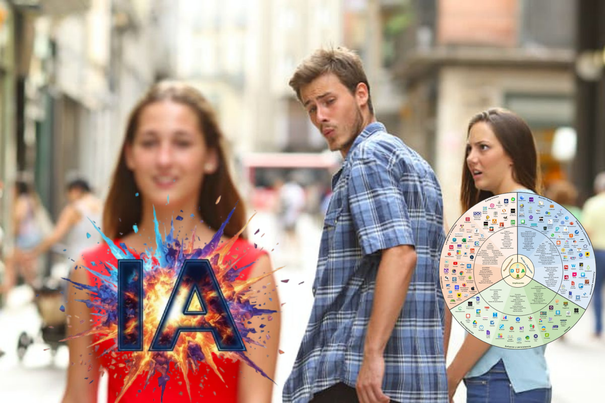

PFPP A Figueroa 2025
Aplicaciones de la IA
Adrián Laureda León
adrianlaureda@edu.xunta.gal
Objetivo
Despertar curiosidad e interés
Perder el miedo

Objetivo
Sacar algo para vuestro día a día
Aplicación práctica inmediata

"
Toda tecnología lo suficientemente avanzada es indistinguible de la magia
— Arthur C. Clarke
Realidad en España
73%
usa IA
de los docentes españoles ha utilizado IA alguna vez
12%
formación
ha recibido formación formal sobre inteligencia artificial
73%
Usa IA
12%
Formación
Fuente: Informe GoStudent 2025, GAD3
Vuestras respuestas
Y vosotros, ¿cómo estáis?
Principal barrera
67%
Falta de
formación
formación
Herramienta más usada
83%
usa
Grok
Grok
Lo que queréis aprender
83%
83%
83%
50%
Etapas
Primaria
50%
Infantil
25%
Ed. Física
8%
Música
8%
Biblio
8%
Total respuestas
12
Fuente: Formulario previo a la formación · Enero 2026
Vuestras respuestas
Vuestro perfil con la IA
Dominio tecnológico
Básico
8%
Medio
58%
Alto
33%
Uso de IA en docencia
Nunca
25%
A veces
58%
Frecuente
17%
Herramientas usadas
Grok
83%
ChatGPT
75%
Gemini
33%
¿Para qué habéis usado la IA?
Nunca
A veces
Frecuente
Generar materiales
67%
Adaptar contenido
67%
Burocracia
50%
Crear rúbricas
42%
Calificar
17%
Retroalimentación
8%
Insight: La mayoría usa IA para generar materiales, pero casi nadie para evaluar o dar feedback
Fuente: Formulario previo a la formación · Enero 2026
Disclaimer
IA en el Aula
Normativa Galicia 2025 — Lei 2/2025
NO PUEDES
- Herramientas con registro/login del alumnado (ChatGPT, Google, Copilot...)
- Confiar en el consentimiento familiar — se considera viciado
- Decisiones automáticas sin revisar (calificaciones, informes)
- Asumir que la IA no se equivoca
SÍ PUEDES
- Herramientas sin registro con alumnado (pensamiento crítico)
- IA en tu trabajo personal — preparar materiales, buscar ideas
- IA como apoyo, siempre que tú valides las decisiones
- Aplicar siempre pensamiento crítico y verificar
Regla de oro: Ante la duda, pregunta
Si consultas antes de actuar, quedas amparado.
DPD.EDUCACIONECIENCIA@XUNTA.GAL
Taller práctico
Hoy vais a crear...
Cuento adaptado (4 niveles)
Audio del cuento
Cuento ilustrado
Vídeo del personaje con pregunta
Explicación curricular (audio/vídeo)
3 actividades transversales
Organización
Etapa
- Infantil
- 1º-2º Primaria
- 3º-4º Primaria
- 5º-6º Primaria
- Secundaria / Otras
Experiencia con IA
- 1 Nunca
- 2 Alguna vez
- 3 Ocasionalmente
- 4 Semanalmente
- 5 A diario
Acceso a los materiales
adri-app.com/figueroa